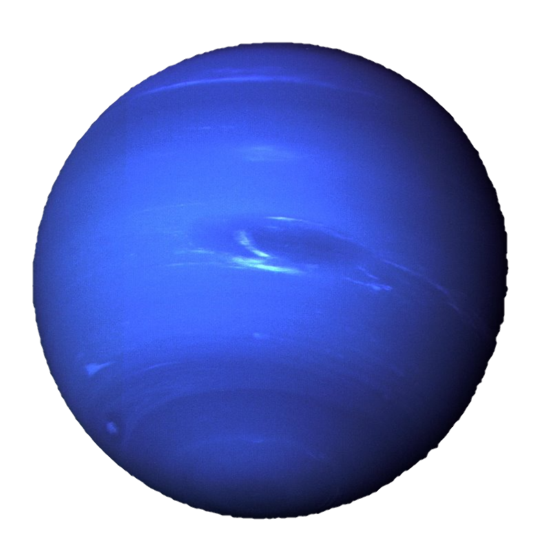

|  |
DefiniciónEl nombre del planeta Neptuno, dios de los océanos para los romanos, en un proceso parecido al que tuvo lugar con Urano, fue adoptado por consenso dentro de la comunidad de astrónomos. Neptuno fue el primer planeta descubierto mediante cálculos matemáticos, ya que los antiguos, al igual que ocurrió con Urano, pensaban que se trataba de una estrella. Características principales de NeptunoOscuro, frío y regido por vientos supersónicos, el gigante de hielo Neptuno es el octavo y más distante planeta de nuestro sistema solar. Está tan lejos que es el único de los planetas que no es visible desde la Tierra a simple vista. Neptuno tiene 14 lunas conocidas que llevan el nombre de dioses del mar y ninfas en la mitología griega y también un sistema de anillos que cuenta con cinco anillos principales y cuatro arcos de anillos, que son cúmulos de polvo y escombros que no llegaron a completar la circunferencia probablemente formados por la gravedad de una luna cercana llamada Galatea. Estructura interna, geología y composición de NeptunoCon un radio de 24.622 kilómetros, Neptuno es el cuarto planeta más grande del sistema solar. Para hacernos una idea de su tamaño, en la línea de su ecuador cabrían cuatro planetas Tierra situados en fila. Respecto a su masa, ocupa el tercer lugar, solo superado por Júpiter y Saturno. Neptuno guarda muchas similitudes con su vecino Urano. Así, Neptuno carece de una superficie sólida, se clasifica como un gigante de hielo, y la mayor parte de su masa corresponde con una especie de "hielo" fluido de agua, amoníaco y metano que se asienta sobre un pequeño núcleo rocoso. Los científicos además creen que podría haber un océano de agua caliente debajo de las frías nubes de Neptuno, el cual no se evaporaría debido a la alta presión que ejerce la atmósfera. Neptuno también posee un campo magnético inclinado unos 47 grados en comparación con el eje de rotación del planeta y que es hasta 27 veces más potente que el de la Tierra. La atmósfera de NeptunoAl igual que sucede en Urano, la atmósfera de Neptuno se compone principalmente de hidrógeno molecular, helio atómico y metano, aunque algunas pequeñas diferencias en su composición, como una mayor cantidad de este último gas, hace que los dos planetas se vean de colores azules diferentes. Neptuno es también el mundo más ventoso de nuestro sistema solar a pesar de su gran distancia del Sol y la baja entrada de energía que llega al planeta desde nuestra estrella, De hecho, los vientos de Neptuno pueden ser tres veces más fuertes que los de Júpiter y nueve veces más fuertes que los de la Tierra, pudiendo alcanzar los 2.000 kilómetros por hora. La exploración de NeptunoSaturno solo ha sido visitado por una sonda fabricada por el ser humano, la Voyager 2, en una ocasión. Hasta ese momento, los escasos datos obtenidos del planeta Neptuno procedían de su observación a través de telescopios. De hecho, la llegada de la Voyager 2 revolucionó lo que sabíamos de este gigante de hielo. Por ejemplo, la sonda reveló una gran mancha oscura, hoy desaparecida, en la atmósfera del planeta, similar a la gran mancha roja de Júpiter. Esta gran mancha correspondía con un gigantesco huracán con vientos de más de 2.000 kilómetros por hora, los más violentos detectados en nuestro sistema solar. Curiosidades sobre el planeta Neptuno
|
Fuente: National Geographic
Volver